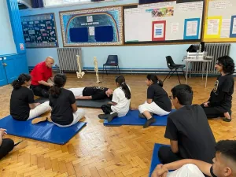
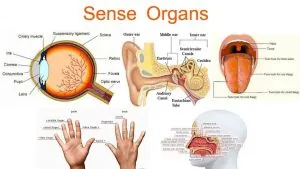
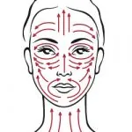

Rex Lassalle is a world-renowned Master in the Japanese healing art of Shiatsu and an authority on East Asian astrology and its impact on health. Moreover, he is an experienced osteopath and a dedicated Aikidoka (practitioner of Aikido), which further emphasizes his holistic approach to health and well-being. Additionally, his background in these disciplines reflects a commitment to integrating physical, mental, and emotional wellness, showcasing how diverse practices can contribute to overall health.

We had the great pleasure and honor of hosting Rex in our dojo, where he taught Be Easy Sōtai—a practice he has developed over decades of research. This self-help therapy encourages individuals to perform simple body checks to identify sensations that feel easy versus those that are difficult or painful. The primary objective of this methodology is to create small, gradual shifts within the body.
As a consequence, these changes gradually accumulate over time, ultimately resulting in improved overall well-being and balance. Moreover, this process highlights the importance of consistent practice in achieving long-term health benefits. Research shows that individuals who regularly engage in health-related practices experience significant improvements in both physical and mental well-being. Sustained engagement in these practices leads to ongoing benefits over time.
Sōtai is a muscular movement therapy that was first developed by Dr. Keizo Hashimoto (1897–1993) from Sendai, Japan. Interestingly, the term So-tai (操体) stands in contrast to the Japanese word for exercise, Tai-so (体操). Furthermore, this distinction highlights the differing philosophies behind body movement and exercise practices. Dr. Hashimoto argued that Sōtai provides an antidote to the forceful and regimented exercises commonly practiced in Japan.
dditionally, he emphasized that Sōtai encourages a more intuitive approach to physical well-being, prompting individuals to reconnect with their body’s natural movements. His philosophy was that anyone could practice Sōtai easily to restore balance and health.
Rex’s approach to Sōtai is simple and direct, involving sensory and body assessments to identify a focal point for treatment.
Below is the summary view of BeEasy Sōtai that was taught by Rex Lassalle.
1- Surrender Your Body
Begin Sōtai with the intention of relaxing or releasing the body. Scan for tension from the crown of your head to your feet. Ensure your breathing syncs with the release of all muscles.


2 – Sensory Assessment
- STIMULATE SENSORY ORGANS by conducting a series of exercises.
ACTIVATE PRESSURE POINTS – heighten senses by applying circular pressure to facial pressure points. - EYES – Controlled movement of the eyes from left to right, up and down 5 times.
- NOSE – Movement of the nose from all directions, apply pressure around the nostrils 5 times.
- LIPS – Tightening and loosening of the lips and movement of the mouth clockwise and counter-clockwise 5 times.
- TONGUE – Release the tongue and stretch the movements from left to right 5 times.
- EARS – Stimulate the lobes and stretch the ears 5 times.
3 – Muscle Response Tests
Conduct a series of tests to determine which side of the body has more tension. Once the most uncomfortable side is established. Stretches are to be conducted on the easy side 5 times and then a retest is to be conducted to determine if there has been any change.
- Psoas Muscle Test: Stretch leg to determine what side feels less comfortable.
- Hip Test: Walk slowly or bend left to right to determine which side feels uneasy.
- Ankle Flexion Test: Rotate and flex ankles to determine which angle is the most challenging.
- Wrist Flexion Test: Rotate and flex wrists to determine which angle is the most challenging.
- Neck Flexion: Rotate neck slowly to find the most difficult position.